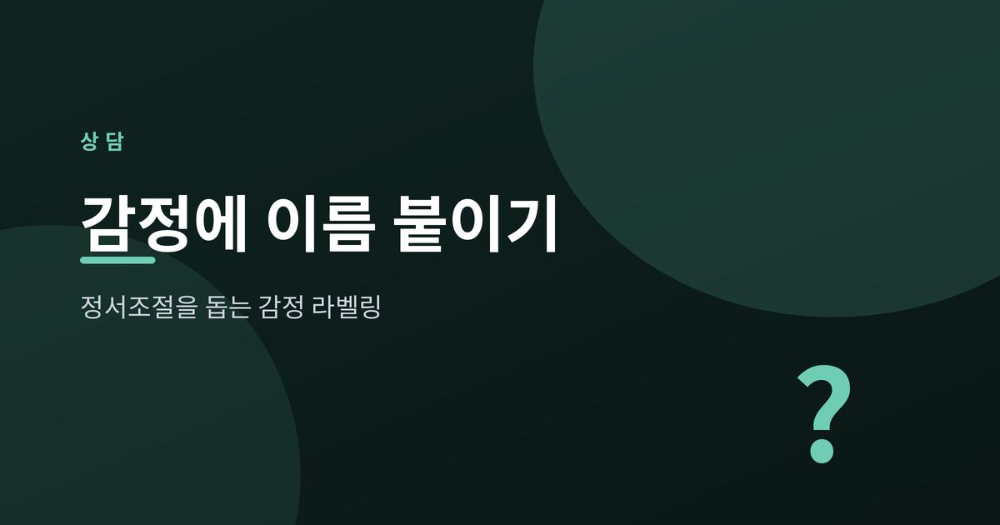
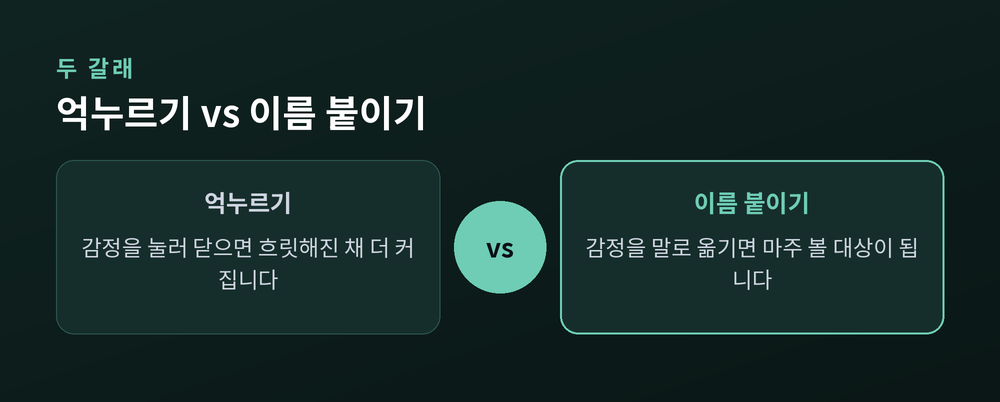
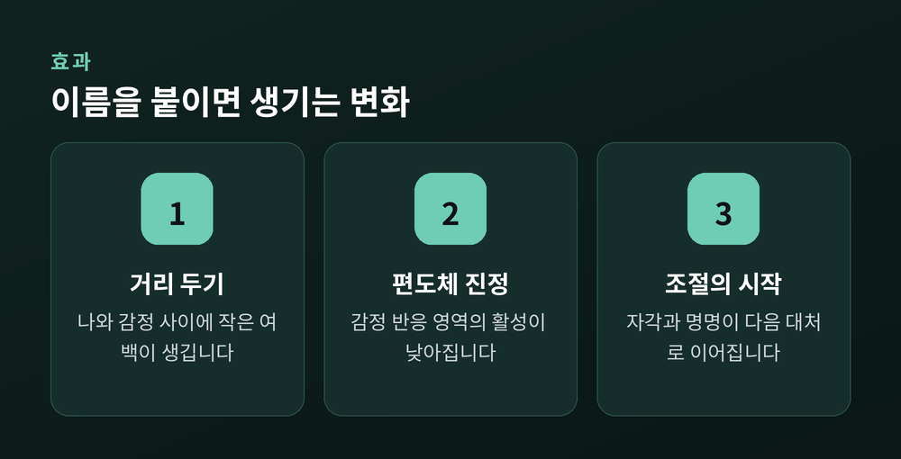
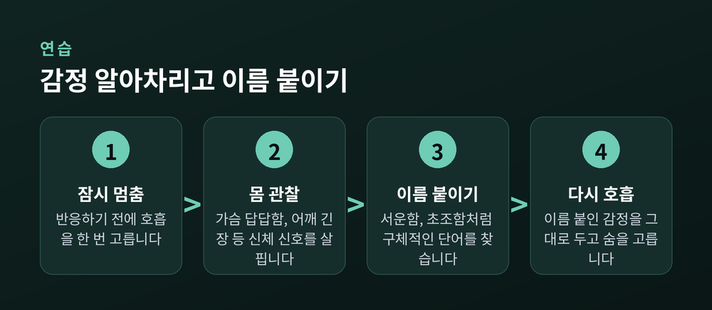

정서조절을 돕는 감정 라벨링

기분이 뒤엉켜 "그냥 안 좋다"는 말밖에 안 나올 때가 있습니다. 그 막연함은 종종 감정을 더 크고 두렵게 만듭니다. 그런데 그 감정에 정확한 이름 하나를 붙이는 것만으로도, 마음의 온도가 조금 내려간다는 연구들이 있습니다.
감정 라벨링(affect labeling)은 지금 느끼는 감정을 언어로 옮기는 일입니다. "이건 화다", "지금 나는 불안하구나" 하고 말로 이름 붙이는 것이지요. 대중적으로는 "이름 붙이면 다스려진다(name it to tame it)"라는 표현으로 알려져 있습니다.
중요한 것은 이것이 감정을 없애거나 억누르는 일이 아니라는 점입니다. 이름을 붙인다고 감정이 사라지지는 않습니다. 다만 흐릿하게 뭉쳐 있던 감정이 관찰 가능한 하나의 대상으로 바뀝니다. 나와 감정 사이에 아주 작은 거리가 생기는 것입니다.

이름 붙이기의 효과는 뇌 연구로도 관찰되었습니다. UCLA 리버먼 연구팀은 사람들이 강한 감정 표정을 볼 때 그 감정에 이름을 붙이면, 감정 반응에 관여하는 편도체의 활성이 눈에 띄게 줄어드는 것을 확인했습니다. 동시에 언어와 사고를 담당하는 전전두피질이 활발해졌습니다.
이후 20여 년의 연구를 모은 분석에서도 이 흐름은 대체로 일관되게 나타났습니다. 감정을 말로 옮기는 순간, 주의가 감정의 소용돌이에서 조금 빠져나오고, 감정이 다룰 수 있는 형태로 바뀌는 셈입니다. 다만 효과의 크기는 상황과 사람에 따라 다르므로, 만능 해법으로 여기기보다 하나의 도구로 이해하는 편이 좋습니다.

여기서 한 걸음 더 나아가면 '감정 세분화(emotion granularity)'라는 개념을 만납니다. 심리학자 리사 펠드먼 배럿이 정리한 이 개념은, 비슷한 감정을 얼마나 세밀하게 구분해 느끼고 표현하는가를 뜻합니다.
감정을 "좋다, 나쁘다" 수준으로만 뭉뚱그리는 사람과, 서운함·억울함·초조함·실망을 구분하는 사람은 감정을 다루는 방식이 다릅니다. 감정을 세밀하게 구분하는 사람일수록 폭음이나 충동 같은 부적응적 대처에 덜 기대고, 불안과 우울 증상도 덜한 경향이 보고됩니다. 정확한 이름은 그저 표현의 문제가 아니라, 감정을 다루는 힘과 이어져 있는 것입니다.

거창하지 않아도 됩니다. 하루 한두 번, 짧게 감정을 적어 보는 감정 일기로 시작할 수 있습니다. 그때의 사건, 감정, 몸의 느낌, 떠오른 생각을 나눠 적으면 감정의 결이 조금씩 또렷해집니다.
감정 단어를 넓혀 보는 것도 도움이 됩니다. "기분 나쁘다" 대신 서운함, 억울함, 초조함처럼 조금 더 구체적인 말을 찾아보는 연습입니다. 강한 감정이 올라올 때는 잠시 멈추어 호흡하고, 가슴의 답답함이나 어깨의 긴장 같은 몸의 신호부터 살펴본 뒤 이름을 붙여도 좋습니다. "나는 화다"보다 "나는 지금 화를 느끼고 있다"라고 말해 보는 것, 그 작은 어법의 차이가 나와 감정 사이에 여백을 만들어 줍니다.
다만 감정에 이름을 붙이는 일은 정서조절을 돕는 하나의 도구일 뿐, 모든 고통을 감당해 주지는 못합니다. 슬픔이나 불안이 오래 이어지거나 일상이 무너질 때, 특히 자해나 자살에 대한 생각이 스칠 때는 혼자 견디지 마시고 전문 상담이나 의료의 도움을 받으시길 권합니다.
감정은 정확히 불러줄 때 조금 순해집니다. 이름을 붙인다고 감정이 사라지지는 않지만, 적어도 그것을 마주 볼 수 있게 됩니다.
— 이름을 아는 감정은, 더 이상 나를 통째로 삼키지 못합니다.
오늘 마음이 흐릿하다면, 그 감정에 이름 하나만 조용히 붙여 보시길 바랍니다.